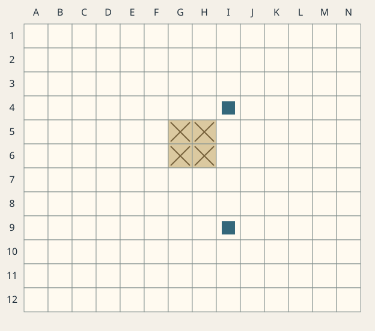

Одинаковые правила, разная история
Все карты совпадают с сеткой нативного пакета: 14 × 12, клетка — 5 футов. G5/H5/G6/H6 — трудная местность; I4/I9 — половинное укрытие. Остальные детали описания декоративны, пока ведущий не изменил поле штатно.
Расстановка и параметры
Герои в порядке списка встречи: B3, B4, B5, B6, C3, C4, C5, C6. Противники: L3, L4, L5, L6, M3, M4. Используйте только нужное число фигур.
Для 3 / 4 / 5 / 6 / 7 / 8 игроков: 2 / 3 / 3 / 4 / 5 / 6 противников, здоровье каждого 12 / 14 / 16 / 18 / 20 / 22. Защита 12; скорость 20 футов; одна ближняя атака +3, 1d4+1 дробящего урона, досягаемость 5 футов.
Перед запуском встречи герои должны находиться в её локации. После сыгранного перехода ведущий перемещает участвующих персонажей обычным действием приложения; герои в других местах автоматически в бой не попадают.
Враги — простая поддерживаемая модель. Мирные решения и ограничения сцены описаны отдельно; ведущий подтверждает их результат. После первого раунда напомните пути переговоров или отступления. Встречи не запускаются автоматически.
Хранители неразобранной ленты
Только если после предупреждения герои начинают забирать спорную ленту силой и группа хочет тактическую сцену; при остановке работы столкновение не начинается.
Цель и выходы
Донести полную бирку до Арды и освободить рабочий проход, не требуя победить всех сторожей. Отступление по свободной белой нити завершает бой; обсуждение материалов продолжается в лагере.
Показать полную бирку Арде, дождаться её явного снятия охраны, вернуть спорную ленту или проложить путь из собственной ткани. Сторожа останавливаются по её команде; ни бросок, ни повреждение сторожа не обязательны.
Поведение противников
Маленькое зачарованное пугало артели из мягких лоскутов; сторожа охраняют неясно отмеченный склад и не понимают человеческих намёков.
Сторожа занимают проход к ленте и пользуются только обычной атакой мягким прутом: +3, 1d4+1. Не преследуют за пределами террасы. При 0 HP используйте обычные правила; падение на мягкий рулон — описание, а не новое состояние или автоматический захват.
Размер группы
Для 3/4/5/6/7/8 игроков используются 2/3/3/4/5/6 сторожей с 12/14/16/18/20/22 HP соответственно; AC 12, одна атака +3 на 1d4+1. При трёх игроках обход открыт с начала; при шести—восьми дайте парам отдельные роли переноса бирки, страховки и переговоров, без добавления новых атак.


Сетка 14×12: центральная зона x=5–9, y=4–8 занята мягкими складками и считается трудной местностью. Катушки в x=3,y=3 и x=11,y=9 дают укрытие. Старт героев у западной кромки, сторожей у восточного склада; белая нить вдоль южного края остаётся путём отхода.
Спор у съёмной полки
Только если герои сознательно переходят от спора о жёлтой метке к силовому удержанию тележки и все согласны разыграть необязательное столкновение; Тен сначала предлагает остановку и разговор.
Цель и выходы
Отвести спорную тележку от рабочего прохода и согласовать очередь. Можно завершить встречу отходом за блюдце, добровольной остановкой обеих сторон или передачей детали владельцу; победа над всеми не нужна.
Прочесть приписку на метке, попросить Тена назвать согласившегося автора и перенести спор к пустой площадке. Брун показывает обход. Возврат спорной детали и помощь с действительно пустыми материалами дают конкретное мирное соглашение.
Поведение противников
Ладонный сборщик материалов с крышкой вместо щита и тупой деревянной рейкой; считает, что защищает разрешённую работу, и готов выслушать владельца.
Спорщики заслоняют тележку, используют только обычную атаку рейкой +3 на 1d4+1 и не гонятся за уходящими. После предъявления границ разрешения или предложенной остановки работы просят перемирия. Не вводить толчки и захваты как автоматические особые действия.
Размер группы
Для 3/4/5/6/7/8 игроков 2/3/3/4/5/6 спорщиков, HP 12/14/16/18/20/22, AC 12, одна атака +3 на 1d4+1. При трёх игроках Брун показывает обход до начала; в больших группах пары могут выводить жителей, читать метку и удерживать свободный путь вместо увеличения числа целей.

Сетка 14×12: россыпь пустых чашек в центре x=5–9,y=4–8 — трудная местность. Блюдца x=2,y=6 и x=12,y=6 дают укрытие. Тележка у северного выхода; задняя дорожка вдоль южной границы доступна для отхода. Ни одна позиция не перекрывает оба выхода.
Бумажные щипачи
Только если герои решают силой вырвать нужную карточку из занятой упаковочной кучи и DM предлагает согласованную необязательную схватку; можно сразу выбрать обмен или обход.
Цель и выходы
Вернуть карточку принятого груза или отнести её новую копию к Кему. Уход на открытую ткань завершает преследование; уничтожать всех щипачей не нужно.
Предложить ненужный обрезок, написать имя владельца на карточке, попросить Вельду отключить уборку участка или просто переписать текст со слов ответственных. Все способы доступны без обязательного броска; на выход людей щипачи не претендуют.
Поведение противников
Зачарованный уборщик из сложенной бумаги, похожий на смешного краба с тупыми краями; собирает свободные обрезки и принимает неподписанную карточку за мусор.
Щипачи держатся возле бумажных холмов и атакуют только обычным бумажным щипком +3 на 1d4+1. Не прыгают через свободную ткань, не имеют особых сопротивлений и не рвут сведения без возможности сделать копию.
Размер группы
Для 3/4/5/6/7/8 игроков 2/3/3/4/5/6 щипачей с 12/14/16/18/20/22 HP; AC 12, одна атака +3 на 1d4+1. В малой группе копию можно писать прямо у края ткани; в большой раздайте роли наблюдения, переноса и переговоров, не добавляя специальных действий врагам.

Сетка 14×12: центральные скомканные листы x=5–9,y=4–8 — трудная местность. Пустые коробки x=3,y=4 и x=11,y=8 дают укрытие; открытая тканевая полоса по южному краю — безопасный выход. Карточка лежит у восточной коробки и видна с западной стороны.